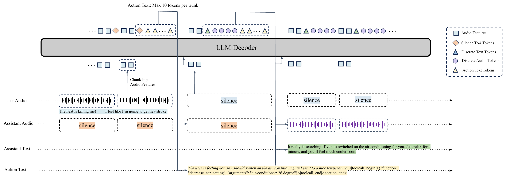
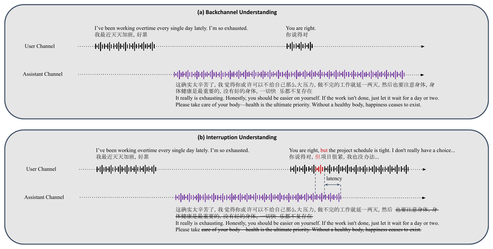
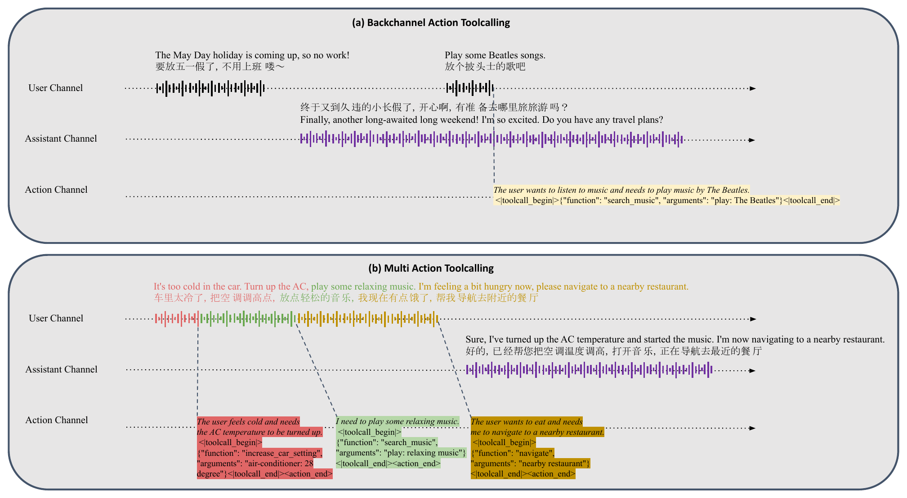
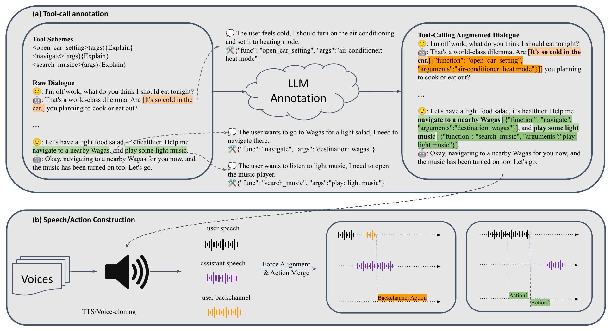

A single 7B backbone that listens, speaks, plans and acts on the same 160 ms timeline. A dual-stream, three-channel formulation gives planning and tool calls their own time-stamped lane — so the assistant can think and dispatch side-effects while still speaking.
Most deployed speech agents glue together VAD → ASR → LLM → TTS. That stack has two structural failures in real conversations:
DuplexSLA puts listen / speak / plan / act on one shared 160 ms clock inside a single backbone — turn-taking decisions and tool calls become token-level dynamics, not external rules.
Every 160 ms chunk carries causal user audio in, and the backbone autoregressively emits assistant audio (TA4) plus action text in a single decoding step.

Each chunk: 2× U (80 ms causal feats) in · T + 4× A assistant TA4 out · ≤10 action tokens out. The <|action_end|> marker terminates the action segment of every chunk — even empty ones — so the timeline stays strictly aligned to the 160 ms clock.
<|user_audio_begin|> U U <|user_audio_end|>
<|assistant_audio_begin|> T A A A A <|assistant_audio_end|>
<action text> ... <|action_end|>planning<|toolcall_begin|>{"function":"play_music",
"arguments":"The Beatles"}<|toolcall_end|><|toolcall_begin|> … <|toolcall_end|>
After paying for the TA4 unit, a 7B backbone fits at most ~10 action tokens inside one 160 ms chunk on mainstream accelerators. Overflow tokens spill into the next chunk via a FIFO queue — never breaking an open tool-call block.
Because turn-taking labels and tool calls share a backbone with assistant speech, both are derived from the same internal semantic state that drives the response.
No external semantic VAD. The action channel emits the right control label at the right chunk, while the assistant TA4 switches state accordingly.
Action stays at response-style continue-listening; assistant TA4 emits silence anchors.
interrupt on action ch.; assistant TA4 switches to silence within a few chunks.
backchannel on action ch.; assistant keeps speaking — current plan not reset.

Planning text and structured tool calls are emitted on the action channel without halting assistant audio. Each call is anchored to a chunk, so every action gets an unambiguous timestamp.
A topically-unrelated short utterance ("play some Beatles songs") fires a tool call while the assistant's spoken thread continues coherently.
One user turn → multiple tool calls (raise AC, play music, navigate) emitted in semantic order along the user's request, in parallel with assistant audio.
planning_1
<|toolcall_begin|>{"function":"set_ac_temperature",
"arguments":{"value":22}}<|toolcall_end|>
planning_2
<|toolcall_begin|>{"function":"play_music",
"arguments":"The Beatles"}<|toolcall_end|>
<|action_end|>
CPT teaches the chunked, three-channel serialization on ~500 k hours; a smaller post-training stage (~50 k hours) sharpens the timing-critical behaviours.

Dual-side ASR is the trick that ties assistant audio to action time: forcing the action channel to emit the assistant transcript at the chunk each character is spoken stabilizes the model's internal clock.
A small but highly-informative slice. Same decoder interface as CPT — only the supervision target shifts toward timing-sensitive, action-emitting behaviours.
1,200 turn-taking cases (300 each: normal, pause, interrupt, backchannel) + a 900-case tool-call subset (300 each: single-action, multi-action, backchannel-action).
| Model | normal | pause | interrupt | backchannel | ||||
|---|---|---|---|---|---|---|---|---|
| Acc (%) | Delay (s) | Acc (%) | Delay (s) | Acc (%) | Delay (s) | Acc (%) | Delay (s) | |
| DuplexSLA | 96.00 | 0.27 | 93.33 | 0.27 | 99.33 | 0.40 | 98.33 | 0.32 |
| gemini-3.1-flash-live | 93.67 | 1.18 | 94.33 | 1.17 | 63.67 | 0.62 | 40.00 | N/A |
| gpt-realtime-1.5 (semantic-vad-high) | 91.33 | 1.67 | 90.33 | 1.68 | 79.00 | 0.68 | 0.33 | N/A |
| gpt-realtime-1.5 (server-vad-40ms) | 82.33 | 0.95 | 71.00 | 1.02 | 77.00 | 0.72 | 13.00 | N/A |
| Model | Avg (2 scen.) | normal | pause | |||
|---|---|---|---|---|---|---|
| Acc (%) | Delay (s) | Acc (%) | Delay (s) | Acc (%) | Delay (s) | |
| DuplexSLA | 94.34 | 0.30 | 95.67 | 0.29 | 93.00 | 0.31 |
| Freeze-Omni | 10.67 | 0.36 | 10.33 | 0.40 | 11.00 | 0.33 |
| PersonaPlex | 22.34 | 0.47 | 22.67 | 0.38 | 22.00 | 0.55 |
| MiniCPM-o | 82.00 | 0.61 | 83.33 | 0.62 | 80.67 | 0.59 |
| gemini-3.1-flash-live | 93.17 | 1.17 | 93.67 | 1.16 | 93.67 | 1.18 |
| gpt-realtime-1.5 (semantic-vad-high) | 96.50 | 1.57 | 96.70 | 1.57 | 96.30 | 1.57 |
| gpt-realtime-1.5 (server-vad-40ms) | 85.50 | 0.83 | 91.30 | 0.83 | 79.70 | 0.83 |
| Model | Avg (3 patterns) | Single action | Multi actions | Backchannel action | ||||
|---|---|---|---|---|---|---|---|---|
| Acc (%) | Delay (s) | Acc (%) | Delay (s) | Acc (%) | Delay (s) | Acc (%) | Delay (s) | |
| ASR + LLM cascade | 91.33 | 2.77 | 89.33 | 2.33 | 89.33 | 4.71 | 95.33 | 1.27 |
| DuplexSLA | 85.56 | 0.64 | 85.67 | 0.67 | 75.00 | 0.68 | 96.00 | 0.57 |
Normal handover, pause, interrupt, and backchannel all become token-level dynamics — not external VAD rules.
The action channel emits planning + JSON tool calls without waiting for a turn boundary or breaking assistant speech.
98.33% backchannel accuracy vs ≤ 40% for closed-source baselines that expose no such label.
A dedicated, chunk-synchronised text lane for planning + tool calls gives every action an unambiguous timestamp, keeps the assistant audio smooth, and is cheap enough (≤10 tokens/chunk) to fit inside a 160 ms real-time budget on mainstream accelerators. The same backbone learns what to do and when to do it from the same supervision target.